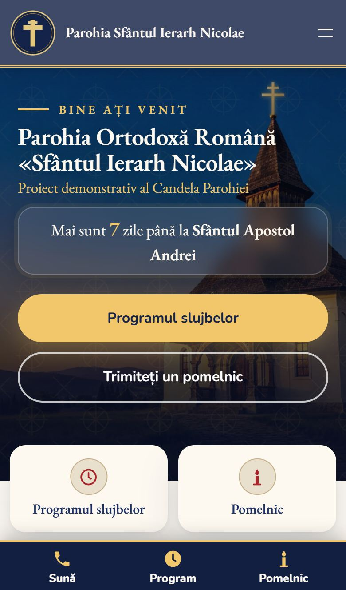
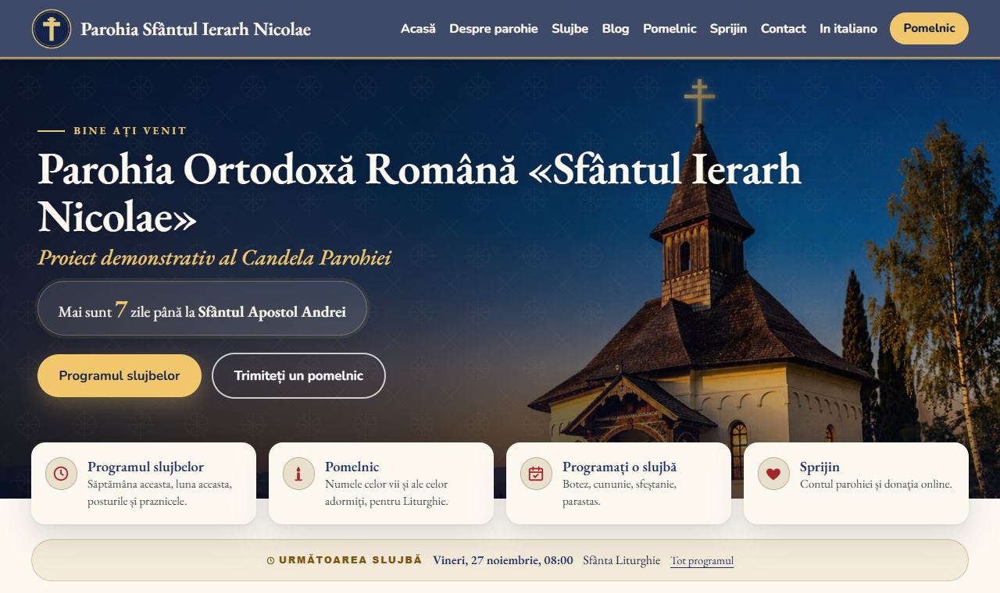
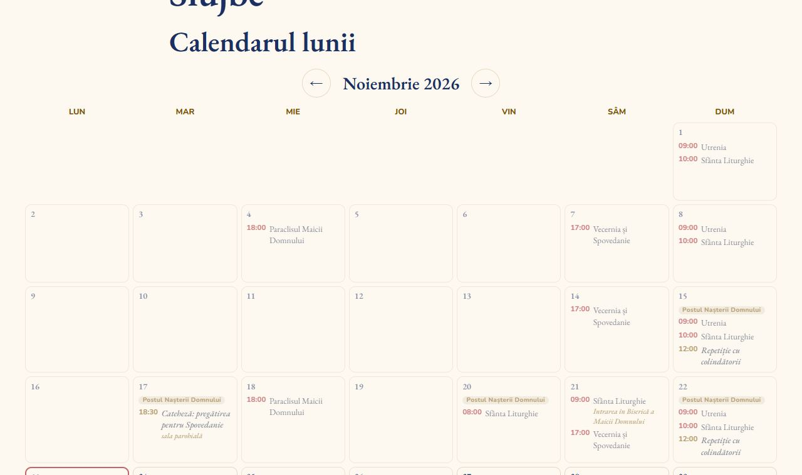

A website for your parishYou post the announcements, the service schedule builds itself
A clean, dignified website that reads well on a phone. You write Sunday's announcement as easily as a Facebook post. You set the usual weekly schedule once, and the fasts, Holy Week and the great feasts fall into the calendar by themselves every year, from the date of Pascha. Parishioners can send names for commemoration and requests for services straight from the site.
See the demo siteOpen the priest's dashboard
The demo opens in your browser in about half a minute, with nothing to install. It shows a sample English-speaking parish; your site can be in English, or in two languages. You can write announcements and change the schedule freely: nothing is saved and nothing is sent.

Everything parishioners look for, in one place
Service schedule
- The ordinary week, set once.
- The fasts and Holy Week, added by themselves every year.
- Great feasts and the parish feast, with the Divine Liturgy added automatically.
- A monthly calendar and a printable list for the church noticeboard.
Announcements and articles
- Parish announcements, kept apart from teaching articles.
- Photos from services and parish life.
- You update the site yourself, without asking anyone.
Names and requests
- Names for commemoration arrive in the priest's dashboard, ready to print.
- Requests for baptisms, weddings, house blessings or memorial services.
- Personal data deleted automatically after 40 days (GDPR).
Support and contact
- The parish account details, with a copy button.
- Map, phone number and a «Call» button on phones.
- Pages in a second language for mixed communities.
For parishioners and for the priest



Why a website, if we have Facebook?
On Facebook, last week's schedule gets buried under new posts, and people without an account see almost nothing. On the website, the schedule, the address and the donation details are always one click away, and anyone searching for the parish on Google finds it. The Facebook page stays: announcements from the site can be shared there.
One price once, then monthly care if you wish
Launch
The Essential package at a reduced price, for the first three parishes that leave us a short written recommendation at the end.
Essential
- Installation and the parish details.
- The service schedule, prepared for the whole year.
- Names, requests, support and contact.
- An illustrated guide for the priest.
Plus
- Everything in Essential.
- Moving up to 20 announcements or articles from your current site or page.
- A second-language page.
- The parish logo, drawn for the site.
Monthly care
- Updates and backups.
- Answers to questions by email.
- Help with the Great Lent and Pascha schedule.
All from us · €25 a month or €250 a year
You handle nothing technical. Hosting and the web address are included, and the address is registered in the parish's name. You get everything in monthly care. If you ever wish to leave, we hand over the site and the domain free of charge.
If you prefer to pay for hosting and the web address yourselves (usually €40-60 a year), they stay directly in the parish's name. All payments to us are made online through Gumroad, by card or PayPal; subscriptions can be cancelled at any time.
From an email to a website, in about a week
Write to us
Which package you are interested in and, if you have one, the address of your current site or Facebook page.
Send the parish details
Name and patron saint, address, the usual service schedule, the calendar you follow (New or Old) and the donation details.
Review the site
You see it first. You pay only when you are happy with it, online, by card or PayPal; the receipt comes by email.
Use it
With the illustrated guide, the first announcement takes a few minutes.
Ask for an offer
Write us a few lines about your parish. We answer within two working days, with no obligation.
Write to aisib@proton.meThe site is built on WordPress, the most widely used open-source website platform: the parish does not depend on us and can work with anyone else at any time. Terms of service (in Romanian; an English summary on request).